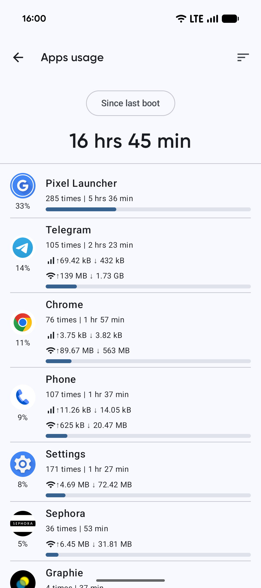

月底流量见底那夜，我用 Skit 揪出了偷跑的元凶
一个安卓折腾党在流量超支的窘迫夜晚，如何用 Skit 的使用报告、流量拆分和权限分级功能，一步步定位到后台偷跑且申请了不必要权限的可疑应用，顺手清理了几个常年躺在手机里的"沉默消耗者"。
月末焦虑
每月二十号左右，我的手机都会弹出一条提醒：移动流量已用 90%。这通常是个信号——接下来的十天我得把自动播放关掉，出门在外尽量只刷文字，省着点用。
但那次不一样。十一月初，我刚充完套餐才过了七天，通知就弹了。打开运营商 APP 一看，数字跳得比以往任何时候都快。我懵了：这个月既没追剧，也没下载大文件，连地图导航都只偶尔开了两次。流量跑哪去了？
我先试了系统自带的数据用量统计。安卓的设置里倒是能看到各应用的消耗，但那个界面只有一个数字——某应用耗了 1.2GB，另一应用耗了 800MB。我盯着数字，还是不知道谁有问题。1.2GB 那个是视频 APP，虽然我没主动打开，但它的后台推送和自动预加载确实吃流量，似乎也说得过去。800MB 那个是个天气预报应用，我更懵了——查天气能花这么多？
折腾了半小时，系统设置没给我答案。一个朋友推荐说，去Skit官网下一个试试。
第一次打开 Skit
Skit 是一款安卓应用信息查看工具，能把手机里装的每一个 App 的底细翻出来——用了多少时间、耗了多少流量、申请了哪些权限。安装包从官方下载拿的，我装它本来是想用来看看某些奇怪应用到底在干什么，没想到第一个用武之地就是流量排查。
打开 Skit，先找到"使用报告"入口。这张报告页给我的第一个冲击不是数字，而是那个占比进度条——每款应用一行，进度条的长度直接对应它吃掉了我多少时间和流量。我一眼就看到了头部那几个：视频 APP 排在第一，这没什么悬念；但第二名赫然是那款天气应用，进度条的颜色亮得刺眼。

我点进去细看，原来 Skit 有个关键设计：移动流量和 Wi-Fi 是分开记的。视频 APP 的 1.2GB 里，绝大部分是 Wi-Fi；而那款天气应用的 800MB，移动流量占了 760MB，Wi-Fi 只有 40MB。这个数字让我瞬间警觉——一个查天气的应用，为什么几乎只在我用移动网络的时候偷跑？
顺着线索往下挖
Skit 不只是给我一个总数，它让我能按移动数据用量重新排序。排完之后，我找到了三个异常对象：
第一个就是那个天气应用——我几乎没主动打开过它，但它的移动流量消耗排在第三。第二个更离谱：一个我装了之后就没再打开过的小游戏，移动流量耗了 300MB。第三个是个笔记应用，我天天用，但它的移动流量反而只有 20MB。
我先点开那个天气预报应用的详情。Skit 把这款应用的权限按四个级别分组展示：正常、危险、特殊、未定义。让我皱眉的是"特殊"那一组——悬浮窗和自启动，它都申请了。一个查天气的应用，要自启动干什么？还要悬浮窗？再看"危险"权限里，位置信息也被授予了，但它为什么需要持续获取我的位置？
那个游戏更有意思
我点开第二款——那个装了就没碰过的小游戏。Skit 显示它的移动流量全部来自后台。而且在权限页的"危险"组里，我看到了"麦克风"。一个休闲小游戏，申请麦克风权限？
Skit 在这里的价值就体现出来了：它不像系统设置那样只告诉你"这个应用申请了麦克风"，而是帮我把权限按安全级别分类，让我一眼就能判断哪些申请有问题。手电筒应用申请位置权限、游戏申请无障碍——这些都是去Skit文档里能查到的典型可疑信号。那天晚上我把几款应用的权限都翻了一遍，果然清出了几个"沉默消耗者"。
清理之后
关掉自启动、撤销了几款应用不必要的危险权限、卸载了那个从没打开过的小游戏，三天之后我再看 Skit 的使用报告，移动流量的消耗速度明显降了下来。那个天气预报应用在关闭自启动之后，移动流量消耗几乎归零。
那次之后我养成了一个习惯：每过一两周就打开 Skit 的使用报告，按移动数据排个序，看看有没有新的异常。它成了我手机里的"消耗体检仪"——不是为了精确定位每个 MB 的去向，而是为了在某个应用悄悄膨胀之前，先把它揪出来。
复盘几句
回头看，安卓系统自带的数据用量统计其实也能告诉我"哪个应用耗得多"，但它给的信息太粗了——混在一起的总量、没有按网络类型拆分、也没有权限分组。Skit 把这三块拼到一起，让我不只是看到"有问题"，还能顺着线索挖到根因。
那天晚上我在 Skit 的帮助里翻了一下，原来这种权限分级和流量拆分都不是一开始就有的，是几个版本迭代慢慢加上的——3.1 版本把数据用量按 Wi-Fi 和移动网络拆分，3.0 版本引入了四级权限分组。独立开发者的项目能这样一步步打磨功能，挺难得的。
如果你也有过"流量莫名其妙见底"或者"想知道手机里的应用到底在干什么"的时刻，试试 Skit。这款工具的中文资料我顺手同步了三份备份，主站是 GitHub，国内访问不方便的话可以换 Gitee 或 GitCode。